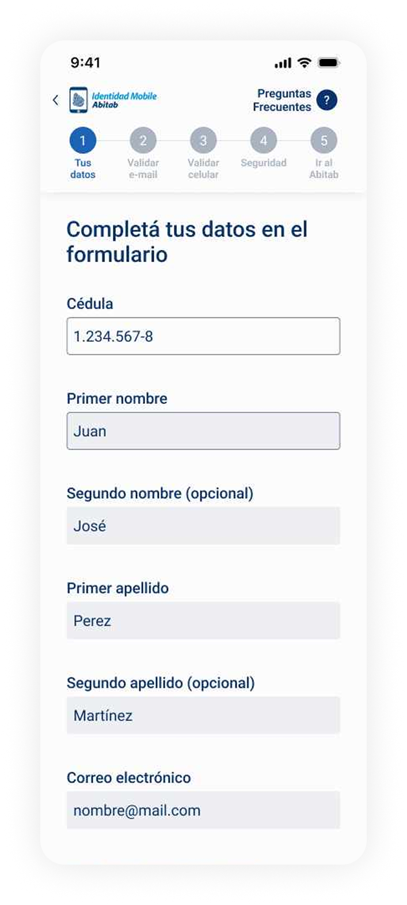
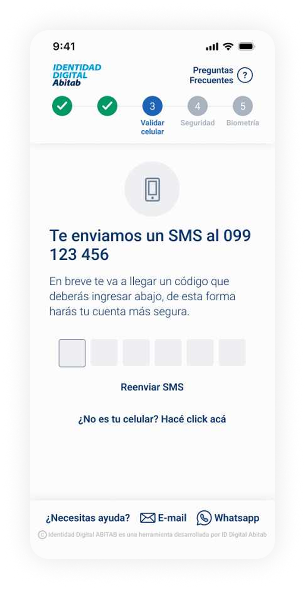
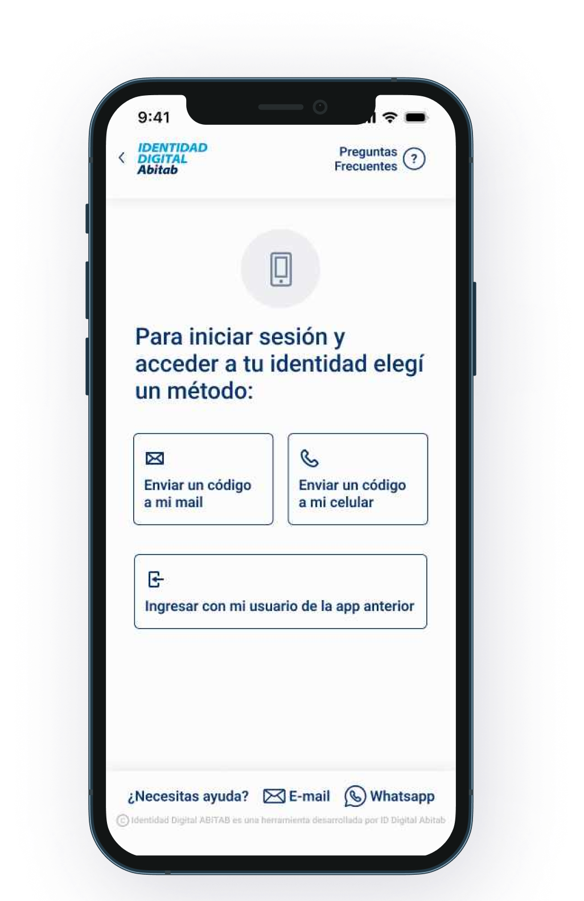

Identidad Digital, App Redesign
Redesigning a critical app used by thousands of Uruguayans for health, financial and government transactions, improving an experience that had to work for everyone, regardless of age or digital confidence.
I joined the project as lead designer on the redesign, owning the experience from research through to final UI and usability testing.
Identidad Digital is a digital identity app developed by Abitab, one of Uruguay's most established financial services companies. Founded in 1993, Abitab handles everything from utility bill payments and money transfers to lottery and mobile identity verification across a network of more than 800 locations. The app allows users to perform critical transactions related to health, financial and government services, making it an essential tool for thousands of Uruguayans across all age groups and levels of digital experience.
Flows the team considered simple were causing significant confusion, particularly among older users and people with limited digital experience. Multiple access points used different logos and terminology, eroding trust before users even began. Errors, drop-offs, and loss of confidence in an app people depended on for essential services.
We combined behavioral data analysis, stakeholder workshops, and real user interviews before touching the UI. The research revealed that seemingly simple flows were causing friction, particularly around step clarity, terminology, and package selection. We simplified every high-friction flow, rewrote microcopy from scratch, and rethought error messages end to end. Every decision was grounded in data and validated through usability testing before launch. The result: version 2.0, a redesign solid enough that the team is still building on it two years later.
One of Uruguay's most established financial services companies, and a daily touchpoint for millions of people across the country.
Abitab has been part of Uruguayan daily life since 1993. With more than 800 locations nationwide and a suite of digital services, it handles everything from utility bills and money transfers to lottery and now digital identity. The Identidad Digital app extends that trusted presence into mobile, allowing citizens to verify their identity and access government, health, and financial services from their phones.
The challenge was significant: build something secure and technically robust that also works for everyone, from tech-savvy professionals to retirees using a smartphone for the first time. Third-party tools and regulatory constraints made the technical side complex. Getting the UX right within those limits was the real design problem.
Before designing anything, we mapped what was broken. The behavioral data gave us the where. The research gave us the why. Three core issues emerged from the analysis of the original experience.
Multiple entry points into the app used inconsistent logos, names and visual aesthetics, making it unclear to users that they were accessing the same service. This fragmentation eroded trust before they even began a task.
The app used "Mobile Identity" in some contexts and "Identidad Digital" in others, with no clear connection between them. Users couldn't tell if they were in the right place, or what the product actually did for them.
The existing interface felt disconnected from Abitab's website and other products. Beyond visual inconsistency, the experience was technically limited and couldn't scale to meet the demands users and regulators now expected.
Given the scale and sensitivity of the product, used by people for critical life transactions, every decision had to be well-informed. We combined behavioral data, stakeholder workshops, and real user interviews before writing a single line of UI.
Behavioral data revealed exactly where users were dropping off and which flows were generating the most friction across the app.
Internal workshops with Abitab stakeholders to align on priorities. Interviews with current and potential users, from retirees to professionals, to surface the real pain points the data couldn't explain.
Lo-fi wireframes to explore how to simplify each high-friction flow, restructuring steps, rewriting microcopy, and rethinking how users move through the registration process.
High-fidelity designs built within Abitab's design system. Every screen, flow and component rebuilt with clarity and accessibility in mind. Full interactive prototype in Figma for testing.
Moderated usability tests with 10 real users before launch. We iterated until the experience was genuinely better, not just visually updated, then shipped.
We started by analyzing behavioral data to understand where users were dropping off and what flows were generating the most friction. That data gave us a precise map of the problem before we spoke to a single user, and prevented us from designing based on assumptions.
We ran internal workshops with Abitab stakeholders to align on priorities and ensure the redesign direction matched both business and regulatory requirements. We then conducted interviews with current and potential users, retirees, professionals, people with limited digital experience, to understand their real pain points. Combining quantitative data with qualitative insight gave us the full picture: where users struggled and why.
What surprised us during research was that flows we considered simple were causing significant confusion, particularly around step labels, package selection, and what came next. The "Security" step label, for example, was unclear to nearly everyone we tested. That finding shaped the entire direction of the redesign: simplify steps, rewrite microcopy from scratch, and rethink error messages from the ground up.
Before launching the new version we ran moderated usability tests with 10 real users to validate that the changes were working. We iterated based on that feedback until we were confident the experience was genuinely better, not just visually updated. Only then did we ship.
The design system was predefined and aligned to Abitab's other products, which meant visual flexibility was limited. Our job wasn't to reinvent it, but to apply it with far more care and consistency than the previous version had.
Color Palette
New Design Elements
Every screen rebuilt with the user in mind. The new home shows the user's security level, digital identity validation status and direct menu access, giving users context and control at a glance. Explore the full interactive prototype below.


Registration flow, from entry to biometric verification
Format 5 in-person, 5 virtual
Duration ~30 minutes per session
Technique Moderated usability testing with pre-established tasks
Objective Identify opportunities to improve the experience from v1 to v2, and validate that the redesign resolved known pain points.
Sample of users
+ 5 more across varied backgrounds and digital literacy levels
Testing script, 3 tasks
→ Task 1: Complete registration on the new prototype
→ Task 2: Select a package on the prototype
→ Task 3: Observational, navigate the current live app
The majority of feedback confirmed the redesign was working. Three major themes emerged from the positive findings, each mapping directly to decisions made during the design process.
Users consistently praised the speed and directness of the new experience, a stark contrast to the friction they'd encountered in v1.
It's very fast. I didn't expect it to be so quick.
- Retired user
Very direct. It asks for what it needs and moves on.
- Finance professional
Users responded positively to seeing the total number of steps ahead of them. Knowing where they were in the process reduced anxiety, especially for longer registration flows.
I like knowing how many steps are left. It helps me feel like I'm making progress.
- Marketing professional
The steps are clear. I always knew what I was doing and what was coming next.
- Hospitality worker
Users with varying levels of digital confidence navigated the app without confusion. The visual clarity, simplified language and reduced cognitive load delivered results that surprised even the stakeholders.
Everything looks very clean. It doesn't overwhelm you.
- Real estate agent
I felt confident. I didn't worry about making a mistake.
- Retired user
We asked users to rate the length of the registration process. The results validated the simplification work, but also surfaced a critical issue with one specific step label.
rated the process as super short
rated the process as short
rated the process as acceptable
Critical Point
The step labeled "Security" was unclear to nearly every user tested. The label didn't communicate what action was required, causing hesitation and confusion before an otherwise straightforward step. This became one of the highest-priority copy fixes before launch.
Beyond the broadly positive feedback, testing also surfaced two areas that needed attention before launch, and informed our final iteration cycle.
Users struggled to understand the differences between available packages. The form didn't make package options visible as a distinct step, users would complete the flow without realizing they'd chosen something. The concept of "future uses" for certain packages was particularly unclear. We addressed this by making package selection a dedicated step with plain-language descriptions of what each package actually enables.
The in-store experience wasn't consistent across Abitab locations. One user was turned away at their nearest branch and directed to a different one, a friction point completely outside the app but directly affecting the perceived quality of the service. This finding informed recommendations for staff training and process alignment across all locations.
The usability tests confirmed the redesign was ready to ship, but also produced a clear set of recommendations for the team to carry forward after launch.
The most critical UX issue remaining is how packages are presented and explained. Before the next release, package selection should be redesigned as a standalone step with clear, benefit-focused language explaining what each package actually enables for the user.
Testing surfaced a set of lower-priority improvements that shouldn't block launch but should be documented and planned. Prepare a phased roadmap to address copy refinements, edge cases in the registration flow, and in-store process alignment across locations.
A follow-up testing round after launch, with real app users rather than prototype testers, will confirm whether the changes are working as expected in production and surface any new friction introduced by real-world conditions.

Two years later, the team that took over is still building on the same foundation we created.
The redesign launched as version 2.0 of the app. User feedback after launch confirmed that the experience had improved significantly, particularly for the flows that had been generating the most friction. The design system we applied with rigor, the microcopy we rewrote from scratch, and the structural decisions we grounded in testing: all of it is still being built on today. To me that's the real measure of good design, not how it looks, but how solid and purposeful it is.